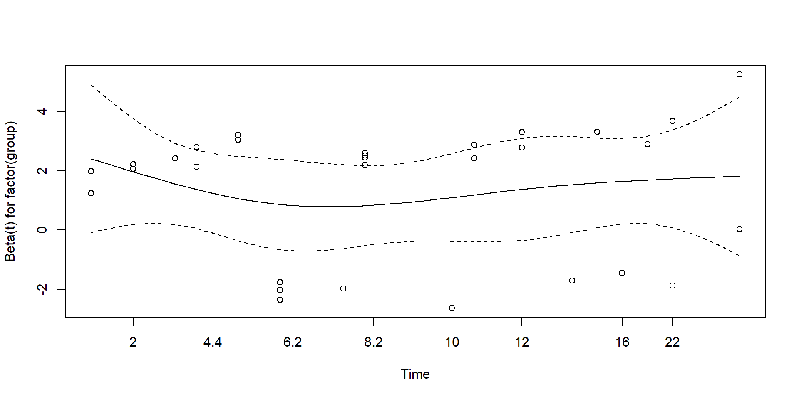
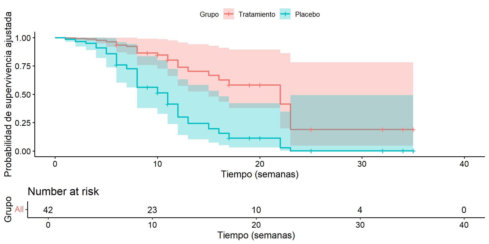

| t.Grupo.1. | log.WBC..Grupo.1. | t.Grupo.2. | log.WBC..Grupo.2. |
|---|---|---|---|
| 6 | 2.31 | 1 | 2.80 |
| 6 | 4.06 | 1 | 5.00 |
| 6 | 3.28 | 2 | 4.91 |
| 7 | 4.43 | 2 | 4.48 |
| 10 | 2.96 | 3 | 4.01 |
| 13 | 2.88 | 4 | 4.36 |
| 16 | 3.60 | 4 | 2.42 |
| 22 | 2.32 | 5 | 3.49 |
| 23 | 2.57 | 5 | 3.97 |
| 6+ | 3.20 | 8 | 3.52 |
| 9+ | 2.80 | 8 | 3.05 |
| 10+ | 2.70 | 8 | 2.32 |
| 11+ | 2.60 | 8 | 3.26 |
| 17+ | 2.16 | 11 | 3.49 |
| 19+ | 2.05 | 11 | 2.12 |
| 20+ | 2.01 | 12 | 1.50 |
| 25+ | 1.78 | 12 | 3.06 |
| 32+ | 2.20 | 15 | 2.30 |
| 32+ | 2.53 | 17 | 2.95 |
| 34+ | 1.47 | 22 | 2.73 |
| 35+ | 1.45 | 23 | 1.97 |
Análisis de Supervivencia
Modelo de Riesgos Proporcionales de Cox
2025-06-01
Datos de Leucemia
Call:
coxph(formula = Surv(time, status) ~ logWBC + factor(group),
data = leukemia)
n= 42, number of events= 30
coef exp(coef) se(coef) z Pr(>|z|)
logWBC 1.6909 5.4243 0.3359 5.034 4.8e-07 ***
factor(group)2 1.3861 3.9991 0.4248 3.263 0.0011 **
---
Signif. codes: 0 '***' 0.001 '**' 0.01 '*' 0.05 '.' 0.1 ' ' 1
exp(coef) exp(-coef) lower .95 upper .95
logWBC 5.424 0.1844 2.808 10.478
factor(group)2 3.999 0.2501 1.739 9.195
Concordance= 0.852 (se = 0.04 )
Likelihood ratio test= 46.71 on 2 df, p=7e-11
Wald test = 33.6 on 2 df, p=5e-08
Score (logrank) test = 46.07 on 2 df, p=1e-10 logWBC factor(group)2
5.424308 3.999125 2.5 % 97.5 %
logWBC 1.032543 2.349238
factor(group)2 0.553486 2.218665 chisq df p
logWBC 4.00e-02 1 0.84
factor(group) 8.27e-05 1 0.99
GLOBAL 4.02e-02 2 0.98

